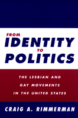

A compelling critique of the gay and lesbian movements in the U.S. and the limits of identity politics
A compelling critique of the gay and lesbian movements in the U.S. and the limits of identity politics


 A compelling critique of the gay and lesbian movements in the U.S. and the limits of identity politics
A compelling critique of the gay and lesbian movements in the U.S. and the limits of identity politics

|  |
From Identity to PoliticsThe Lesbian and Gay Movements in the United StatesCraig A. Rimmermanpaper EAN: 978-1-56639-905-0 (ISBN: 1-56639-905-X) |
Finalist for the Lambda Literary Foundation's 15th Annual Lambda Literary Award in Biography, 2003
"Rimmerman points a wide angle lens in the direction of the gay and lesbian movement, allowing him to capture the full breadth of its organizations and their varied strategies. He brings toughminded analysis to his topic, and is willing to challenge strategies for change that he finds bankrupt. The result is a book whose insights can only invigorate gay and lesbian politics in the United States today."
—John D'Emilio, Professor of Gender and Women's Studies, University of Illinois at Chicago and author of Sexual Politics, Sexual Communities
Liberal democracy has provided a certain degree of lesbian and gay rights. But those rights, as we now know, are not unlimited, and they continue to be the focus of efforts by lesbian and gay movements in the United States to promote social change. In this compelling critique, Craig Rimmerman looks at the past, present, and future of the movements to analyze whether it is possible for them to link identity concerns with a progressive coalition for political, social, and gender change, one that take into account race, class, and gender inequalities.
Enriched by eight years of interviews in Washington, D.C. and New York City, and by the author's experience as a Capitol Hill staffer, From Identity to Politics will provoke discussion in classrooms and caucus rooms across the United States.
Excerpt available at www.temple.edu/tempress
"Craig Rimmerman has written the best kind of academic book, one that is rich in factual detail yet broad in its perspective. His critique of the current lesbian and gay movements clarifies the limitations that are inherent in a narrow identity politics and makes a strong case for building even broader coalitions and doing more grassroots organizing. Any student of social movements, and especially students of the lesbian and gay movements, will find this book a rewarding read."
—Patricia A. Cain, author of Rainbow Rights: The Role of Lawyers and Courts in the Lesbian and Gay Civil Rights Movement
"Craig Rimmerman has written an insightful book that belongs on the bookshelf of not only students of gay and lesbian politics, but of everyone interested in social movements. His thoughtful critique of various strategies that various movement activists have chosen will be enormously helpful to academics and activists alike."
—Clyde Wilcox, Department of Government, Georgetown University
"Rigorous but accessible, this poli-sci take on the struggle for gay and lesbian rights offers a blueprint for those readers interested in actively linking identity-driven movements with broader progressive agendas concerning class, race and gender issues to forge a coalition for social and political change."
—Publishers Weekly
"This book offers three distinct yet interconnected themes. First, it serves as a fine outline and introduction to discrete phases in the history of US lesbian and gay political history. Second, it introduces concepts critical to the study of the evolution of any political movement and attaches them specifically to the lesbian and gay movements. Finally, it challenges readers to understand the strengths and weaknesses of each of the phases and raises questions about why some approaches worked while others did not. ... Highly recommended."
—Choice
"[T]he author, a political scientist, has written a thoughtful study, at once descriptive and prescriptive, that explores the rise, struggles, and future of the gay rights movement."
—The Journal of American History
Read a review from Political Science Quarterly (Summer 2003), written by Miriam Smith (pdf).
Read a review from Argumentation and Advocacy, Summer 2002 (pdf).
Acknowledgments
1. Perspectives on the Lesbian and Gay Movements
2. The Assimilationist Strategy: Electoral Politics and Interest-Group Liberalism
3. The Legal Rights Strategy
4. Unconventional Politics as a Strategy for Change
5. The Christian Right's Challenge
6. Critical Reflections on the Movements' Futures
Appendix A: Platform of the 1993 March on Washington for Lesbian, Gay, and Bi Equal Rights and Liberation
Appendix B: The Millennium March Agenda: A Status Update
Appendix C: Another Divisive Anti-Gay Initiative from the OCA: Bringing Discrimination into Oregon's Schools
Appendix D: Basic Rights Oregon Targets Queer Youth Activists
Notes
References
Index
 | Craig A. Rimmerman is Professor of Political Science at Hobart and William Smith Colleges. He is the author of several books, including The New Citizenship: Unconventional Politics, Activism, and Service. |
Sexuality Studies/Sexual Identity
Political Science and Public Policy
Queer Politics, Queer Theories, edited by Craig Rimmerman.
The last ten years have seen the growth of rich research in the politics of sexuality. Queer Politics, Queer Theories, edited by Craig Rimmerman, aims at developing this research both within and across disciplines. The series will focus on politics in the broadest sense: not only state- and government-oriented studies, but also community politics and the internal politics of new social movements. Such work may originate in political science, sociology, economics, American studies, philosophy, law, history, or anthropology. The series will be defined not by particular academic disciplines but by the questions raised in it. The keys are a concern for the play of power and meaning in discussions of sexuality, and/or a reading of the role of sexuality and sexual identities in conceptions of social and political studies or in our common life.
© 2015 Temple University. All Rights Reserved. This page: http://www.temple.edu/tempress/titles/1351_reg.html.